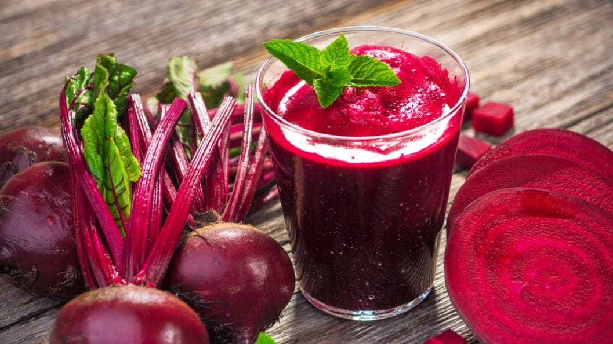

Türk kahvesi
Türk kahvesi, ince öğütülmüş kahvenin özel bir demlik olan cezvede köpüklü hale gelene kadar pişirilip özel fincanlarda servis edildiği geleneksel bir kahve türüdür. Yoğun aroması ve özgün sunumuyla bilinir, Türk kültüründe önemli bir yer tutar.
Çay
Türk çayı, ince demliklerde demlenen ve ince belli bardaklarda servis edilen siyah çay temellidir. Türkiye'de günlük yaşamın vazgeçilmez bir parçasıdır ve sıkça sosyal etkileşimlerde tercih edilir.
Ayran

Ayran, Türk mutfağına ait bir içecektir. Temel olarak yoğurt, su, ve tuzun karıştırılmasıyla yapılır. Genellikle soğuk servis edilen ayran, Türkiye'de özellikle sıcak yaz günlerinde yaygın olarak tüketilir. Ferahlatıcı ve hafif asidik bir tada sahiptir. Ayran, özellikle kebap ve diğer et yemekleriyle birlikte tercih edilen bir içecektir. Türk mutfağındaki geleneksel bir içki olarak bilinir.
Şalgam suyu
Şalgam suyu, fermente edilmiş şalgam sebzelerinden yapılan ve genellikle mor renkli bir içecektir. Türk mutfağında kebap ve et yemekleriyle sıkça tüketilir. Ferahlatıcı ve hafif ekşi bir tada sahiptir.